Electromagnetic Waves
Chapter 26: Properties of Light
26.1 Electromagnetic Waves
26.2 Electromagnetic Wave Velocity
26.3 The Electromagnetic Spectrum
26.4 Transparent Materials
26.5 Opaque Materials
26.6 Seeing Light—The Eye
Chapter 26 opener photos 1–5 were omitted because no matching captured images were supplied.
1 Looking down from the space station MIR at a solar eclipse on Earth. 2 Bob and Leslie Abrams (my daughter) assist Dave Wall with an optics experiment. 3 Spots of light on the wall, on the ground, and on lab manual author Dean Baird are pinhole images of the Sun cast through small openings between leaves on nearby trees. 4 During a partial solar eclipse (when the Moon covers part of the Sun in the sky), the solar images are crescents. 5 During an annular eclipse, the Moon aligns with but doesn’t fully cover the Sun, resulting in rarely seen solar circles, as demonstrated by Paul Doherty during the 2012 annular eclipse that passed over the western United States.
James Clerk Maxwell
James Clerk Maxwell portrait was omitted because no matching captured image was supplied.
James Clerk Maxwell, born in 1831, was a Scottish mathematician and theoretical physicist. His parents did not meet and marry until they were well into their thirties, which was unusual at that time, and his mother was nearly 40 when James was born. James was the only surviving child, his older sister dying in infancy.
Maxwell had an unquenchable curiosity from an early age. His mother recognized his potential and took responsibility for his early education, which in the Victorian era was largely the job of the woman of the house. Unfortunately, she died of abdominal cancer when Maxwell was only 8. His education was then overseen by his father, who hired a 16-year-old tutor for young Maxwell. The tutor treated him harshly, chiding him for being slow and wayward. After his father dismissed the tutor, Maxwell was sent to the prestigious Edinburgh Academy.
Ten-year-old Maxwell, raised in isolation on his father’s countryside estate, didn’t fit in well at school. With no space in the first-year class, he was obliged to join the second-year class with classmates a year older. His mannerisms and Galloway accent struck the other boys as rustic, and arriving on his first day at school wearing home-made shoes and tunic earned him the unkind nickname of “Dafty.” Maxwell, however, never seemed to have resented the epithet, bearing it without complaint for many years.
At an early age, Maxwell was fascinated by geometry. His academic work remained unremarkable until, at the age of 13, he won the school’s mathematical medal and first prizes for English and poetry. At age 14, Maxwell wrote a paper describing a mechanical means of drawing mathematical curves with a piece of twine and the properties of curves with two or more foci. His genius showed in this work on “oval curves,” which was presented to the Royal Society of Edinburgh, but not by Maxwell. Since he was deemed too young, he entrusted the paper to a professor of natural philosophy at Edinburgh University.
Maxwell left Edinburgh Academy at the age of 16 and began attending classes at the University of Edinburgh. He had the opportunity to attend Cambridge after his first term but decided instead to complete the full course of his undergraduate studies at the local university.
Maxwell soon found his classes undemanding, and he immersed himself in private study during his free time at the university and particularly during visits back home. There he experimented with improvised chemical and electromagnetic apparatus. His chief preoccupation at the time was polarized light. He constructed shaped blocks of gelatin, subjecting them to various stresses, and with a pair of polarizing prisms viewed the resulting colored fringes in the gelatin. Maxwell had discovered photoelasticity, a means of determining the stress distribution within physical structures.
At age 18, Maxwell contributed two papers to the Royal Society of Edinburgh. Although the work was impressive, as with his schoolboy paper on oval curves, he was considered too young to stand at the rostrum and make the presentation himself. Maxwell’s papers were instead delivered by his tutor.
In October 1850, already an accomplished mathematician, Maxwell left Scotland for Cambridge University and soon joined Trinity College, where in 1854 he graduated with a degree in mathematics. Maxwell decided to remain at Trinity after graduating and, aside from tutoring and examining duties, to pursue scientific interests such as color, hydrostatics, optics, and Saturn’s rings at his own leisure.
In 1859, after moving to Marischal College in Aberdeen, Scotland, Maxwell married Katherine Mary Dewar, the daughter of the college’s principal. In that same year, he won a prize for concluding that the rings of Saturn consist of small particles—a conclusion verified more than a century later in the space age. Maxwell had a near-fatal bout of smallpox soon thereafter and headed south to London with his wife. He took a position at King’s College, which turned out to be the most productive period of his career. There he displayed the world’s first colored photograph and developed ideas on the viscosity of gases. His most significant achievement, however, was the development of electromagnetic theory, synthesizing all previous unrelated observations, experiments, and equations of electricity, magnetism, and even optics into one consistent theory. Around 1862, he calculated that the speed of propagation of an electromagnetic field is approximately the speed of light. He wrote, “We can scarcely avoid the conclusion that light consists in the transverse undulations of the same medium which is the cause of electric and magnetic phenomena.”
After Newton’s work, which first unified mechanics, Maxwell’s work in electromagnetism has been called the “second great unification in physics.” Maxwell died of abdominal cancer at the age of 48.
26.1 Electromagnetic Waves
Recall from Chapter 25 that Maxwell discovered that light is the oscillation of electric and magnetic fields. You know that if you shake the end of a stick back and forth in still water, you will produce waves on the surface of the water. Maxwell taught us that if you similarly shake an electrically charged rod to and fro in empty space, you will produce waves in space. The vibrating electric and magnetic fields regenerate each other to make up an electromagnetic wave, which emanates (moves outward) from the vibrating charge. There is only one speed, it turns out, for which the electric and magnetic fields remain in perfect balance, reinforcing each other as they carry energy through space. Let’s see why this is so.
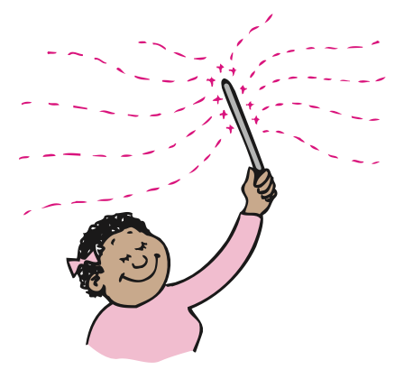

Electromagnetic Wave Velocity
26.2 Electromagnetic Wave Velocity
Unlike other moving objects, electromagnetic waves traveling through free space never change speed. Why this is so involves electromagnetic induction and energy conservation. If light were to slow down, its changing electric field would generate a weaker magnetic field, which, in turn, would generate a weaker electric field, and so on, until the wave died out. Energy would be lost and none would be transported from one place to another. So light cannot travel slower than it does.
If light were to speed up, the changing electric field would generate a stronger magnetic field, which, in turn, would generate a stronger electric field, and so on, a crescendo of ever-increasing field strength and ever-increasing energy—clearly a no-no with respect to energy conservation. At only one speed does mutual induction continue indefinitely, carrying energy forward without loss or gain. From his equations of electromagnetic induction, Maxwell calculated the value of this critical speed and found it to be 300,000 kilometers per second. In his calculation, he used only the constants in his equations that were determined by simple laboratory experiments with electric and magnetic fields. He didn’t use the speed of light. He found the speed of light!
Maxwell quickly realized that he had discovered the solution to one of the greatest mysteries of the universe—the nature of light. He discovered that light is simply electromagnetic radiation within a particular frequency range, 4.3 × 1014 to 7 × 1014 vibrations per second. Such waves activate the “electrical antennae” in the retina of the eye. The lower-frequency waves appear red, and the higher-frequency waves appear violet.1 Maxwell realized, at the same time, that electromagnetic radiation of any frequency propagates at the same speed as light.
The Electromagnetic Spectrum
26.3 The Electromagnetic Spectrum
In a vacuum, all electromagnetic waves move at the same speed and differ from one another in their frequency. The classification of electromagnetic waves according to frequency is the electromagnetic spectrum (Figure 26.3). Electromagnetic waves have been detected with a frequency as low as 0.01 hertz (Hz). Electromagnetic waves with frequencies of several thousand hertz (kHz) are classified as very low frequency radio waves.

One million hertz (MHz) lies in the middle of the AM radio band. The very high frequency (VHF) television band of waves starts at about 50 MHz, and FM radio waves are between 88 MHz and 108 MHz. Cell phones operate on either 800 MHz or 1900 MHz. Then come ultrahigh frequencies (UHF), followed by microwaves, beyond which are infrared waves, often called “heat waves.” Farther still is visible light, which makes up less than one-millionth of 1% of the measured electromagnetic spectrum. The lowest frequency of light visible to our eyes appears red. The highest frequencies of visible light, which are nearly twice the frequency of red light, appear violet. Still higher frequencies are ultraviolet. These higher-frequency waves cause sunburns. Higher frequencies beyond ultraviolet are in the X-ray and gamma-ray regions. There are no sharp boundaries between the regions, which actually overlap each other. The spectrum is divided into these arbitrary regions for classification.

The concepts and relationships we treated earlier in our study of wave motion (see Chapter 19) apply here. Recall that the frequency of a wave is the same as the frequency of the vibrating source that creates the wave. Likewise, the frequency of an electromagnetic wave as it vibrates through space is identical to the frequency of the oscillating electric charge that generates it.2 Different frequencies correspond to different wavelengths—waves of low frequencies have long wavelengths, and waves of high frequencies have short wavelengths. For example, since the speed of the wave is 300,000 km/s, an electric charge oscillating once per second (1 Hz) will produce a wave with a wavelength of 300,000 km. This is because only one wavelength is generated in 1 second. If the frequency of oscillation were 10 Hz, then 10 wavelengths would be formed in 1 second, and the corresponding wavelength would be 30,000 km. A frequency of 10,000 Hz would produce a wavelength of 30 km. So, the higher the frequency of the vibrating charge, the shorter the wavelength of radiant energy.3
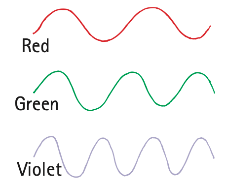
We tend to think of space as empty, but only because we cannot see the montages of electromagnetic waves that permeate every part of our surroundings. We see some of these waves, of course, as light. These waves constitute only a microportion of the electromagnetic spectrum. We are unconscious of radio and cell-phone waves, which engulf us every moment. Free electrons in every piece of metal on Earth’s surface continuously dance to the rhythms of these waves. They jiggle in unison with the electrons being driven up and down along their transmitting antennae. A radio or television receiver is simply a device that sorts and amplifies these tiny currents. There is radiation everywhere. Our first impression of the universe is one of matter and void, but actually the universe is a dense sea of radiation occupied only occasionally by specks of matter.
Transparent Materials
26.4 Transparent Materials
When light is transmitted through matter, some of the electrons in the matter are forced into vibration. In this way, vibrations in the emitter are transmitted to vibrations in the receiver. This is similar to the way sound is transmitted (Figure 26.6).

The way a receiving material responds when light is incident on it depends on the frequency of the light and on the natural frequency of the electrons in the material. Visible light vibrates at a very high frequency, more than 100 trillion times per second (more than 1014 Hz). If a charged object is to respond to these ultrafast vibrations, it must have very, very little inertia. Because the mass of electrons is so tiny, they can vibrate at this rate.
Such materials as glass and water allow light to pass through in straight lines. We say they are transparent to light. To understand how light travels through a transparent material, visualize the electrons in the atoms of transparent materials as if they were connected to the nucleus by springs (Figure 26.7).4 When a light wave is incident upon them, the electrons are set into vibration.
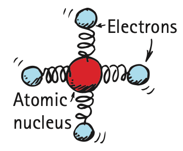
Materials that are springy (elastic) respond more to vibrations at some frequencies than at others (see Chapter 20). Bells ring at a particular frequency, tuning forks vibrate at a particular frequency, and so do the electrons of atoms and molecules. The natural vibration frequencies of an electron depend on how strongly it is attached to its atom or molecule. Different atoms and molecules have different “spring strengths.” Electrons in the atoms of glass have a natural vibration frequency in the ultraviolet range. Therefore, when ultraviolet waves shine on glass, resonance occurs and the vibration of electrons builds up to large amplitudes, just as pushing someone at the resonant frequency on a swing builds to a large amplitude. The energy received by any glass atom is either reemitted or passed on to neighboring atoms by collisions. Resonating atoms in the glass can hold onto the energy of the ultraviolet light for quite a long time (about 100 millionths of a second). During this time, the atom makes more than 1 million vibrations, and it collides with neighboring atoms and gives up its energy as heat. Thus, glass is not transparent to ultraviolet light.
At lower wave frequencies, such as those of visible light, electrons in the glass atoms are forced into vibration, but at lower amplitudes. The atoms hold the energy for a shorter time, with less chance of collision with neighboring atoms, and with less energy transformed into heat. The energy of vibrating electrons is reemitted as light. Glass is transparent to all the frequencies of visible light. The frequency of the reemitted light that is passed from atom to atom is identical to the frequency of the light that produced the vibration in the first place. However, there is a slight time delay between absorption and reemission. It is this time delay that results in a lower average speed of light through a transparent material (Figure 26.8).

Figure 26.9 was omitted because no matching captured image was supplied.
Light travels at different average speeds through different materials. We say average speeds because the speed of light in a vacuum, whether in interstellar space or in the space between molecules in a piece of glass, is a constant 300,000 km/s. We call this speed of light c.5 The speed of light in the atmosphere is slightly less than in a vacuum, but it is usually rounded off as c. In water, light travels at 75% of its speed in a vacuum, or 0.75c. In glass, light travels at about 0.67c, depending on the type of glass. In a diamond, light travels at less than half its speed in a vacuum, only 0.41c. When light emerges from these materials into the air, it travels at its original speed, c.
In glass, infrared waves, with frequencies lower than those of visible light, cause not only the electrons but entire atoms or molecules to vibrate. This vibration increases the internal energy and temperature of the structure, which is why infrared waves are often called heat waves. So we see that glass is transparent to visible light, but not to ultraviolet and infrared light.
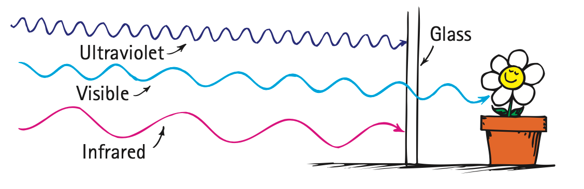
Opaque Materials
26.5 Opaque Materials
Most things around us are opaque—they absorb light without reemitting it. Books, desks, chairs, and people are opaque. Vibrations given by light to their atoms and molecules are turned into random kinetic energy—into internal energy. These materials become slightly warmer.
Metals are opaque. Because the outer electrons of atoms in metals are not bound to any particular atom, they are free to wander with very little restraint throughout the material (which is why metal conducts electricity and heat so well). When light shines on metal and sets these free electrons into vibration, their energy does not “spring” from atom to atom in the material but, instead, is reflected. That’s why metals are shiny.
Figure 26.11 was omitted because no matching captured image was supplied.
Earth’s atmosphere is transparent to some ultraviolet light, to all visible light, and to some infrared light, but it is opaque to high-frequency ultraviolet light. The small amount of ultraviolet that does get through is responsible for sunburns. If it all got through, we would be fried to a crisp. Clouds are semitransparent to ultraviolet, which is why you can get a sunburn on a cloudy day. Dark skin absorbs ultraviolet before it can penetrate too far, whereas it travels deeper in fair skin. With mild and gradual exposure, fair skin develops a tan and increases its protection against ultraviolet light. Ultraviolet light is also damaging to the eyes—and to tarred roofs. Now you know why tarred roofs are covered with gravel.
Have you noticed that things look darker when they are wet than when they are dry? Light incident on a dry surface bounces directly to your eye, while light incident on a wet surface bounces around inside the transparent wet region before it reaches your eye. What happens with each bounce? Absorption! So more absorption of light occurs in a wet surface, and the surface looks darker.
Shadows
A thin beam of light is often called a ray. When we stand in the sunlight, some of the light is stopped while other rays continue in a straight-line path. We cast a shadow—a region where light rays do not reach. If you are close to your own shadow, the outline of your shadow is sharp because the Sun is so far away. Either a large, far-away light source or a small, nearby light source will produce a sharp shadow. A large, nearby light source produces a somewhat blurry shadow (Figure 26.12). There is usually a dark part on the inside and a lighter part around the edges of a shadow. A total shadow is called an umbra, and a partial shadow is called a penumbra. A penumbra appears where some of the light is blocked but other light fills in (Figure 26.13). A penumbra also occurs where light from a broad source is only partially blocked.


Both Earth and the Moon cast shadows when sunlight is incident on them. When the path of either of these bodies crosses into the shadow cast by the other, an eclipse occurs (Figure 26.14). A dramatic example of the umbra and penumbra occurs when the shadow of the Moon falls on Earth during a solar eclipse. Because of the large size of the Sun, the rays taper to provide an umbra and a surrounding penumbra (Figure 26.15). If you stand in the umbra part of the shadow, you experience darkness during the day—a total eclipse. If you stand in the penumbra, you experience a partial eclipse and you see a crescent of the Sun (recall the photos of partial-eclipse crescents in Chapter 1, and recall the opening photo in this chapter of a solar eclipse as viewed from the space station MIR). During a lunar eclipse, the Moon passes into the shadow of Earth.


Seeing Light—The Eye
26.6 Seeing Light—The Eye
Light is the only thing we see with the most remarkable optical instrument known—the eye (Figure 26.16). As light enters the eye, it moves through the transparent cover called the cornea, which does about 70% of the necessary bending of the light before it passes through an opening in the iris (colored part of the eye). The opening is called the pupil. The light then reaches the crystalline lens, which fine-tunes the focusing of light that passes through a gelatinous fluid called the vitreous humor. Light then passes to the retina.
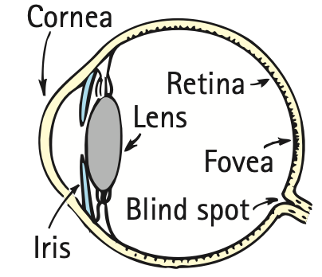
The retina covers the back two-thirds of the eye and is responsible for the wide field of vision that we experience. For clear vision, light must focus directly on the retina. When light focuses in front of or behind the retina, vision is blurry. Until very recently, the retina was more sensitive to light than any artificial detector ever made. The retina is not uniform. In the middle is the macula, and a small depression in the center is the fovea, the region of most distinct vision. Behind the retina is the optic nerve, which transmits signals from the photoreceptor cells to the brain.
Much greater detail can be seen at the fovea than at the side parts of the eye. There is also a spot in the retina where the nerves carrying all the information exit along the optic nerve; this is the blind spot. You can demonstrate that you have a blind spot in each eye if you hold this book at arm’s length, close your left eye, and look at Figure 26.17 with your right eye only. You can see both the round dot and the X at this distance. If you now move the book slowly toward your face, with your right eye fixed upon the dot, you’ll reach a position about 20–25 cm from your eye where the X disappears. Now repeat this exercise with only the left eye open, looking this time at the X, and the dot will disappear.
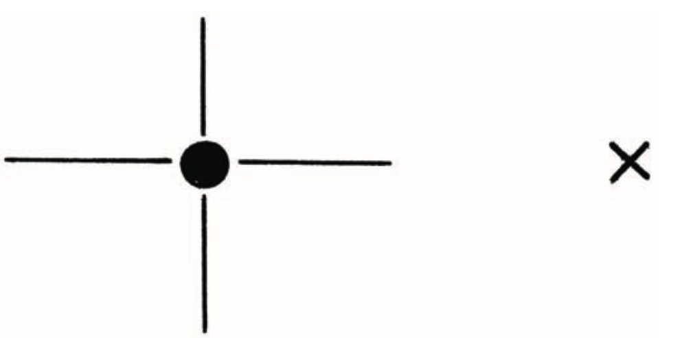
When you look with both eyes open, you are not aware of the blind spot, mainly because one eye “fills in” the part to which the other eye is blind. Amazingly, the brain fills in the “expected” view even with one eye open. Repeat the exercise of Figure 26.17 with small objects on various backgrounds. Note that, instead of seeing nothing, your brain gratuitously fills in the appropriate background. So you not only see what’s there—you also see what’s not there!
The retina is composed of tiny antennae that resonate to the incoming light. There are two basic kinds of antennae, the rods and the cones (Figure 26.18). As the names imply, some of the antennae are rod-shaped and some cone-shaped. The rods predominate toward the periphery of the retina, while the cones are denser toward the fovea. Rods handle vision in low light, and cones handle color vision and detail. There are three types of cones: those that are stimulated by low-frequency light, those that are stimulated by light of intermediate frequencies, and those that are stimulated by light of higher frequencies. The cones are very dense in the fovea itself, and, since they are packed so tightly, they are much finer or narrower there than elsewhere in the retina. We see color most acutely by focusing an image on the fovea, where there are no rods. Primates and a species of ground squirrel are the only mammals that have all three types of cones and experience full color vision. The retinas of other mammals consist primarily of rods, which are sensitive to only lightness or darkness, like a black-and-white photograph or movie.
Figure 26.18 was omitted because no matching captured image was supplied.
In the human eye, the number of cones decreases as we move away from the fovea. It’s interesting that the color of an object disappears if it is viewed on the periphery of the visual field. This can be tested by having a friend enter your periphery of vision with some brightly colored objects. You will find that you can see the objects before you can see what color they are.
Another interesting observation is that the periphery of the retina is very sensitive to motion. Although our vision is poor from the corner of our eye, we are sensitive to anything moving there. We are “wired” to look for something jiggling to the side of our visual field, a feature that must have been important in our evolutionary development. So have your friend shake those brightly colored objects when she brings them into the periphery of your vision. If you can just barely see the objects when they shake, but not at all when they’re stationary, then you won’t be able to tell what color they are (Figure 26.19). Try it and see!
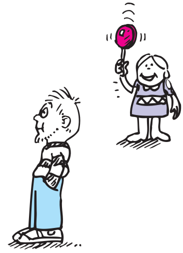
Another distinguishing feature of the rods and cones is the intensity of light to which they respond. The cones require more energy than the rods before they will “fire” an impulse through the nervous system. If the intensity of light is very low, the things we see have no color. We see low intensities with our rods. Dark-adapted vision is almost entirely due to the rods, while vision in bright light is due to the cones. Stars, for example, look white to us. Yet most stars are actually brightly colored. A time exposure of the stars with a camera reveals reds and red-oranges for the “cooler” stars and blues and blue-violets for the “hotter” stars. The starlight is too weak, however, to fire the color-perceiving cones in the retina. So we see the stars with our rods and perceive them as white or, at best, only faintly colored. Females have a slightly lower threshold of firing for the cones, however, and can see a bit more color than males. So if she says she sees colored stars and he says she doesn’t, she is probably right!
We find that the rods “see” better than the cones toward the blue end of the color spectrum, and the reverse is true at the other end of the spectrum. As far as the rods are concerned, a deep red object might as well be black. Thus, if you have two colored objects—say, one blue and one red—the blue one will appear much brighter than the red in dim light, although the red one might be much brighter than the blue one in bright light. The effect is quite intriguing. Try this: In a dark room, find a magazine or something that has colors, and, before you know for sure what the colors are, judge the lighter and darker areas. Then bring the magazine into the light. You should see a remarkable shift between the brightest and dimmest colors.6
6 This phenomenon is called the Purkinje effect after the Czech physiologist who discovered it.
The rods and cones in the retina are not connected directly to the optic nerve but, quite amazingly, are connected to many other cells that are joined to one another. While many of these cells are interconnected, only a few carry information to the optic nerve. Through these interconnections, a certain amount of information is combined from several visual receptors and “digested” in the retina. In this way, the light signal is “thought about” before it goes to the optic nerve and thence to the main body of the brain. So some brain functioning occurs in the eye itself. The eye does some of our “thinking” for us. This thinking is betrayed by the iris, the colored part of the eye that expands and contracts and regulates the size of the pupil, admitting more or less light as the intensity of light changes. It so happens that the expansion or contraction of the iris is related to our emotions. If we see, smell, taste, or hear something that is pleasing to us, our pupils automatically increase in size. If we see, smell, taste, or hear something repugnant to us, our pupils automatically contract. Many card players have betrayed the value of a hand by the size of their pupils! (The study of the size of the pupil as a function of attitudes is called pupilometrics.)

The brightest light that the human eye can perceive without damage is some 500 million times brighter than the dimmest light that can be perceived. Look at a nearby lightbulb. Then turn to look into a dimly lit closet. The difference in light intensity may be more than a million to one. Because of an effect called lateral inhibition, we don’t perceive the actual differences in brightness. The brightest places in our visual field are prevented from outshining the rest because whenever a receptor cell on our retina sends a strong brightness signal to our brain, it also signals neighboring cells to dim their responses. In this way, we even out our visual field, which allows us to discern detail in very bright areas and in dark areas as well. (Cameras are not so good at this. A photograph of a scene with strong differences of intensity may be overexposed in one area and underexposed in another.) Lateral inhibition exaggerates the difference in brightness at the edges of places in our visual field. Edges, by definition, separate one thing from another. So we accentuate differences. The gray rectangle on the left in Figure 26.21 appears darker than the gray rectangle on the right when the edge that separates them is in our view. But cover the edge with your pencil or your finger, and they look equally bright. That’s because both rectangles are equally bright; each rectangle is shaded lighter to darker, moving from left to right. Our eye concentrates on the boundary where the dark edge of the left rectangle joins the light edge of the right rectangle, and our eye–brain system assumes that the rest of the rectangle is the same. We pay attention to the boundary and ignore the rest.
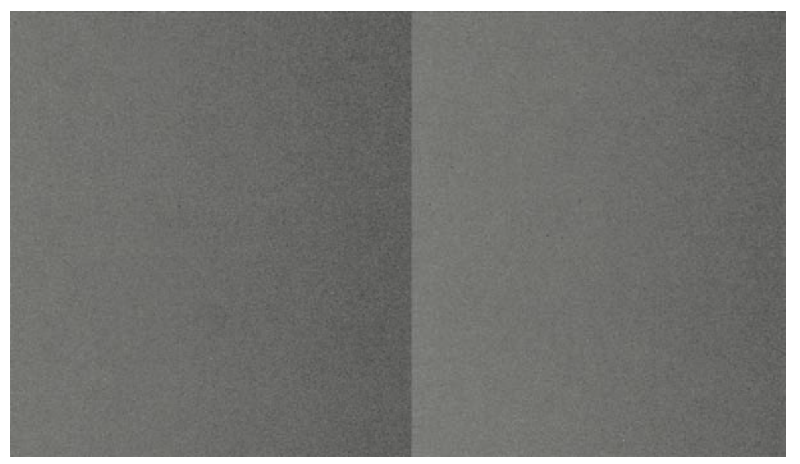
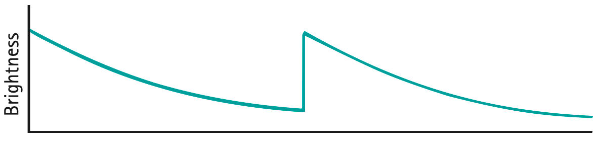
Questions to ponder: Is the way the eye selects edges and makes assumptions about what lies beyond similar to the way in which we sometimes make judgments about other cultures and other people? Don’t we, in the same way, tend to exaggerate the differences on the surface while ignoring the similarities and subtle differences within?
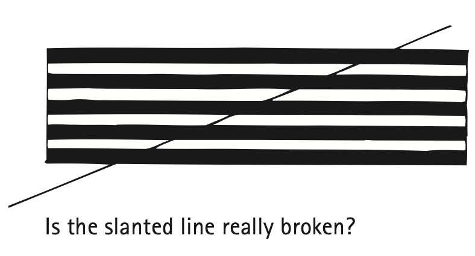
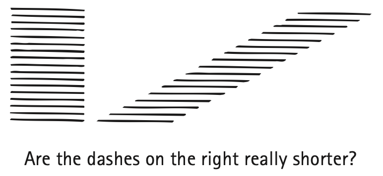


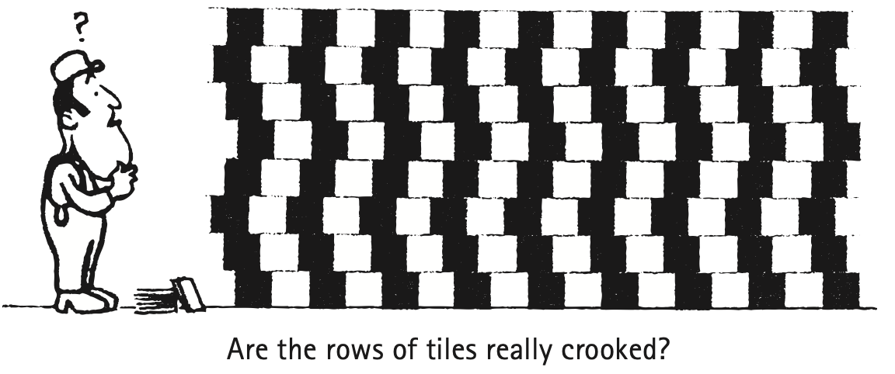
Textbook Sections: 26.1–26.6
Learning Target: Students will explain light as electromagnetic radiation and describe how light travels, interacts with matter, forms shadows, and allows vision.
- I can explain that light is an electromagnetic wave.
- I can describe the relationship between wavelength, frequency, and wave speed.
- I can identify visible light as one part of the electromagnetic spectrum.
- I can distinguish transparent, translucent, and opaque materials.
- I can explain how shadows form when light is blocked.
- I can explain that we see objects when light from them enters our eyes.